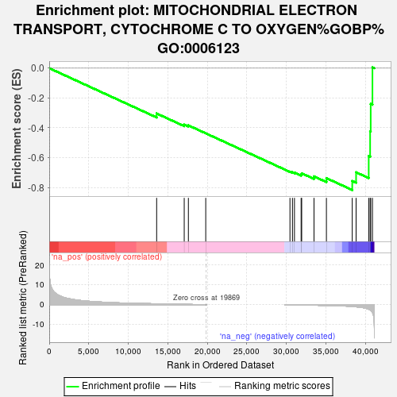
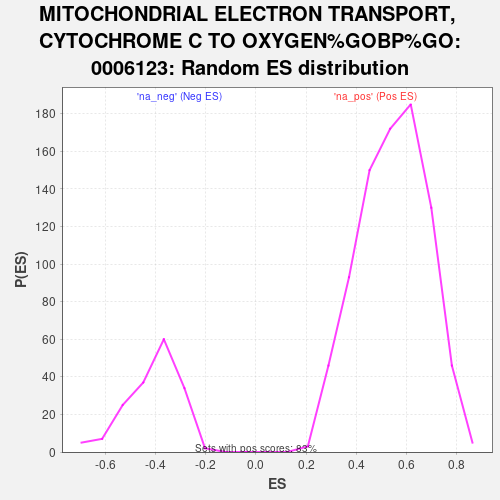

| | | Dataset | DS_vs_CTR_ranked_genelist |
| Phenotype | NoPhenotypeAvailable |
| Upregulated in class | na_neg |
| GeneSet | MITOCHONDRIAL ELECTRON TRANSPORT, CYTOCHROME C TO OXYGEN%GOBP%GO:0006123 |
| Enrichment Score (ES) | -0.816785 |
| Normalized Enrichment Score (NES) | -1.9974823 |
| Nominal p-value | 0.0 |
| FDR q-value | 0.027429426 |
| FWER p-Value | 0.133 |
Table: GSEA Results Summary

Fig 1: Enrichment plot: MITOCHONDRIAL ELECTRON TRANSPORT, CYTOCHROME C TO OXYGEN%GOBP%GO:0006123
Profile of the Running ES Score & Positions of GeneSet Members on the Rank Ordered List

Fig 2: MITOCHONDRIAL ELECTRON TRANSPORT, CYTOCHROME C TO OXYGEN%GOBP%GO:0006123: Random ES distribution
Gene set null distribution of ES for MITOCHONDRIAL ELECTRON TRANSPORT, CYTOCHROME C TO OXYGEN%GOBP%GO:0006123